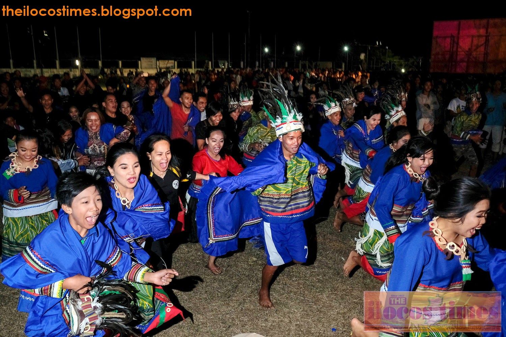
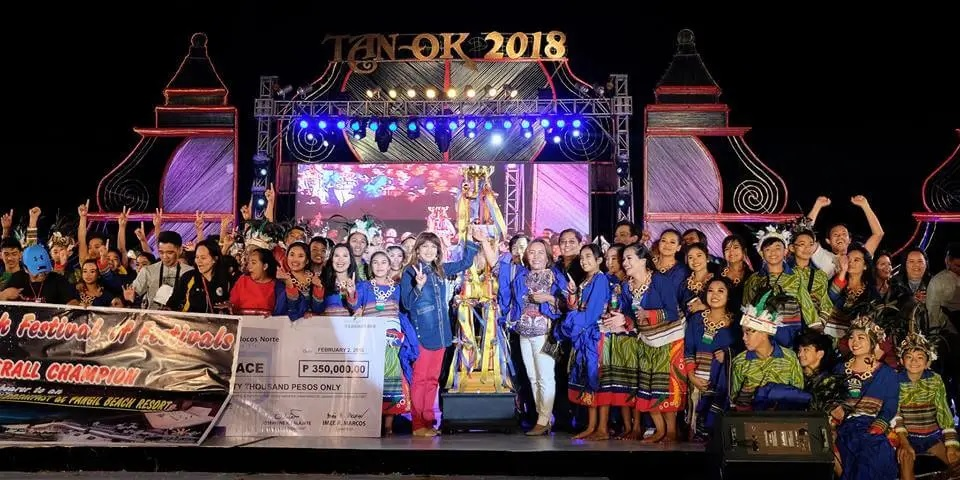

Adams is the first ICC town in history to claim "Tan-ok" crown in Ilocos Norte's bicentennial |
||
|  |  | |
The Municipality of Adams made history in Ilocos Norte last night as the first member of the Indigenous Cultural Community (ICC) in the province to conquer the "Tan-ok ni Ilocano Festival of Festivals." |
||
The tribes of Adams |
||||

|